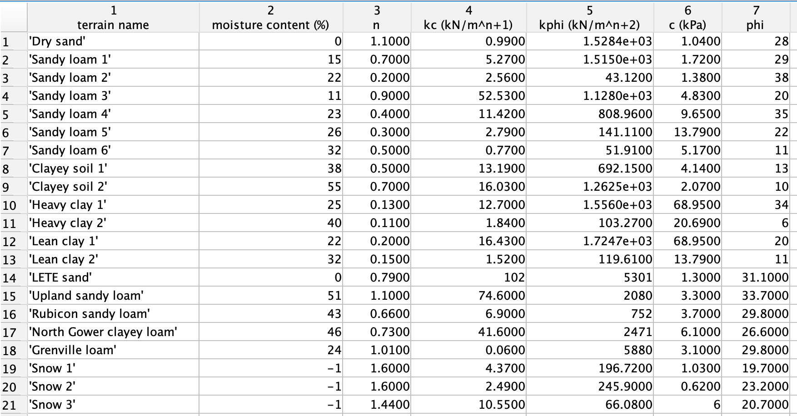
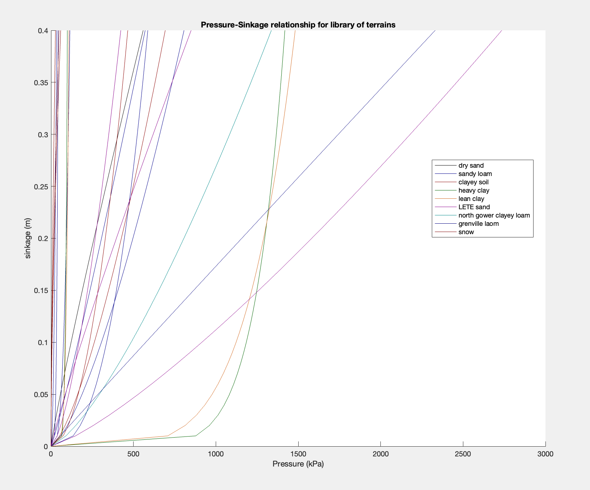
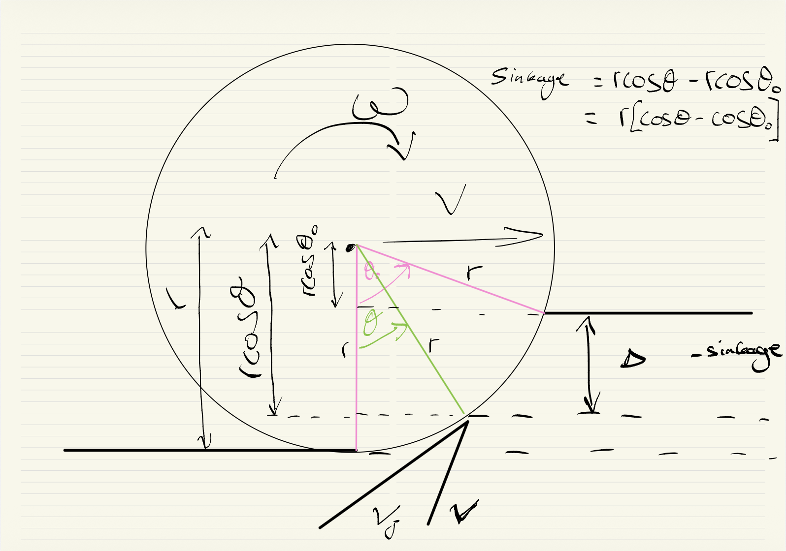
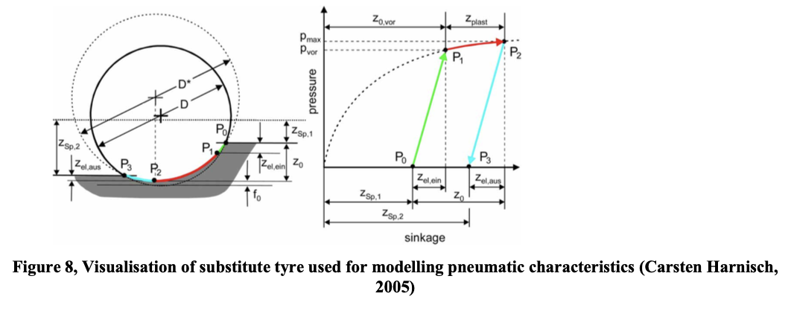
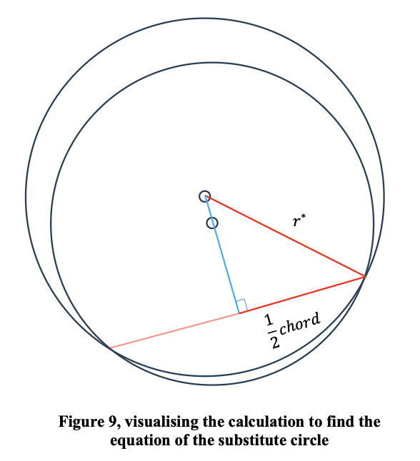
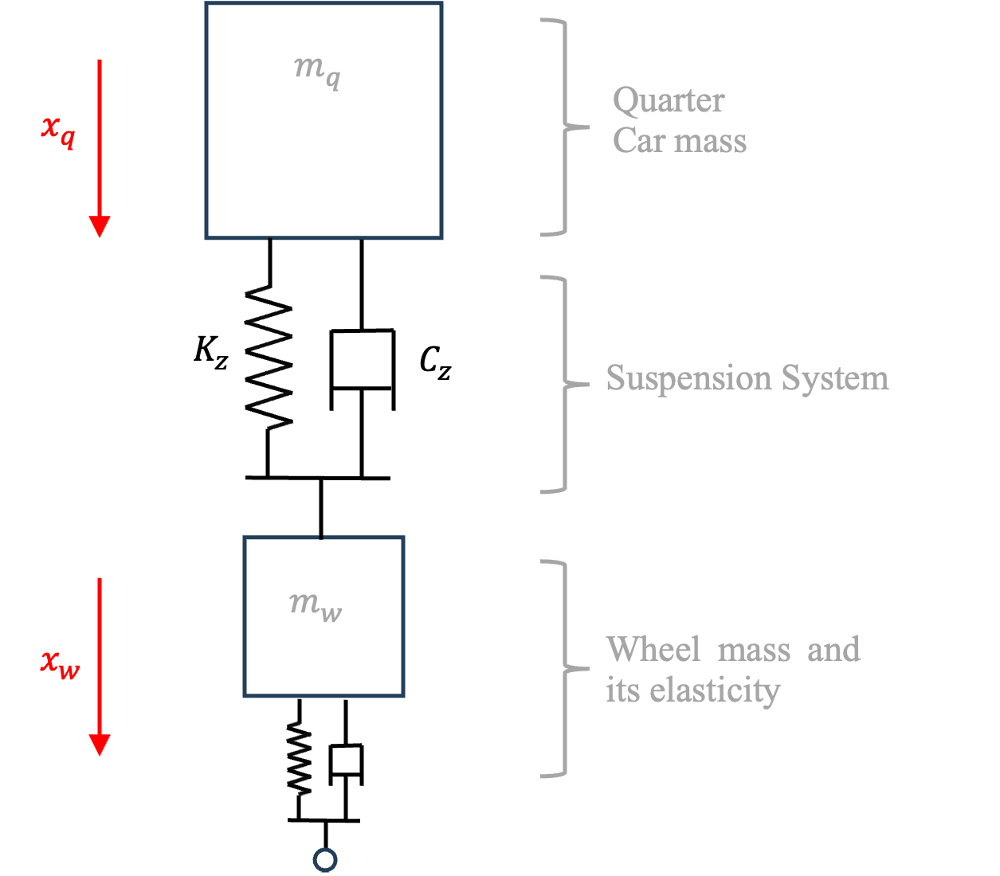
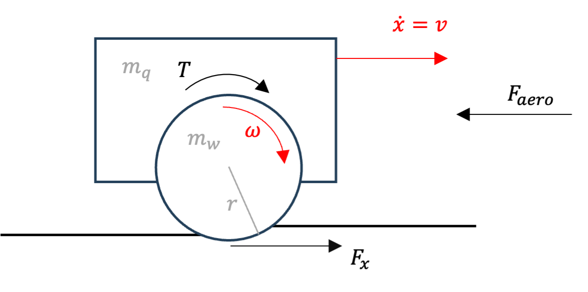
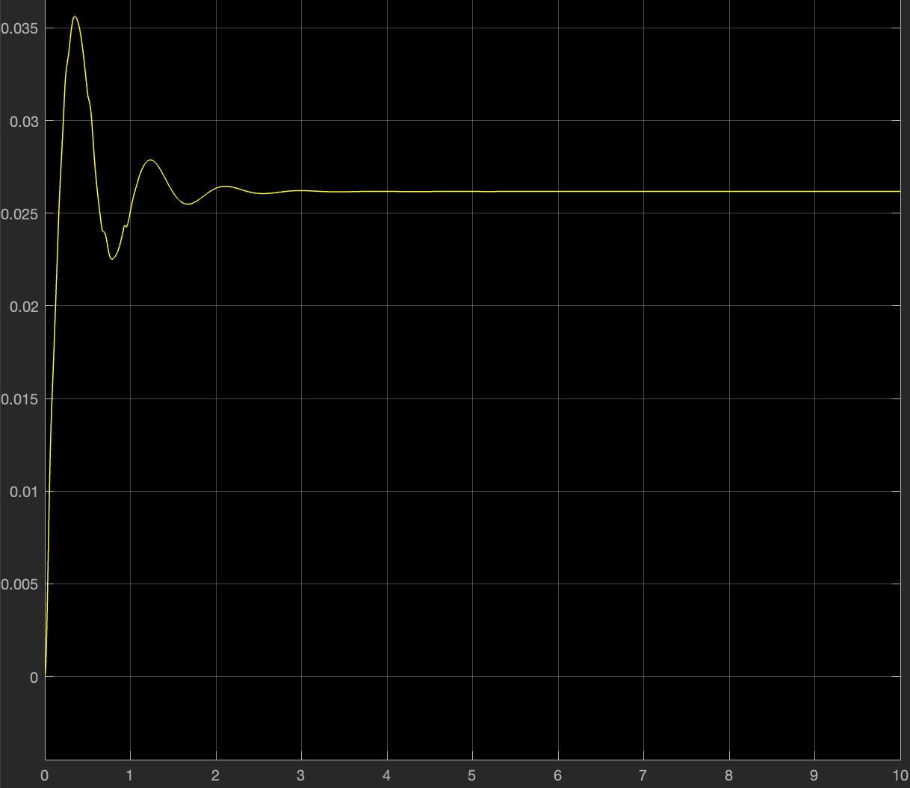
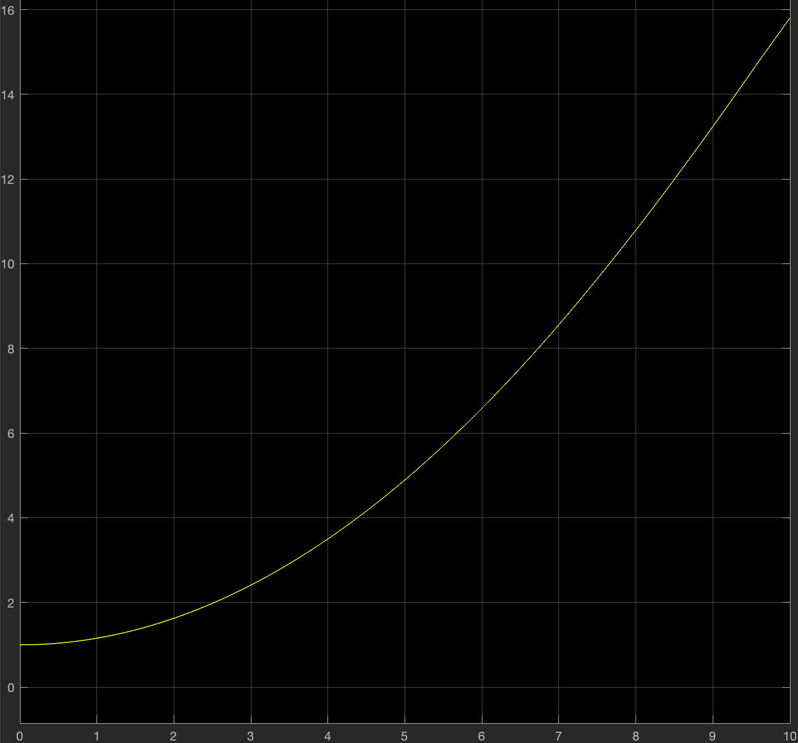

Choosing the project
My Final Year Project was an opportunity to take ownership of a piece of engineering work and explore a topic in more depth than in most modules. I worked with a supervisor throughout, who helped provide a general pathway for the project, but I had the freedom to decide what I wanted to investigate in greater detail and what aspects to place more emphasis on.
So I wanted to pick something where I was interested or familiar with the topic and could picture the kind of work that I would be doing, to be confident that I would enjoy exploring the theory and completing the work, while also having ideas about what I could explore in greater depth and where I could take the project.
Based on these I chose a project titled terramechanics tyre model. Although my degree was aeronautical and this project was on the automotive side, the project initially stood out based on mentioning a tyre model in the title, which I had heard about from watching F1. Reading onto the project description, it stated that tyre models are an important element of ride and handling simulation, explaining their role in estimating forces. From driving on my racing simulator I have felt the difference in resistance on the wheel from varying amounts of grip based on factors such as tyre temperature and wear, and experienced the subsequent changes in vehicle handling: inducing wheelspin, locking up, and spinning out more easily.
So I already felt more of a connection to the topic of this project and thought there was potential to be interested in exploring the engineering theory, but didn't know exactly what the theory or work would entail. The mention of estimating forces gave some insight into the engineering work, potentially producing free body diagrams of the tyre and surface, and the mention of handling simulation gave insight into how the focus could go beyond just a tyre model.
Researching what could be involved in a tyre model and simulation project informed me that the model would be made on MATLAB, and that this tyre model would be implemented into a vehicle model in Simulink to carry out the simulation.
The description then introduced the problem: that most models deal with tyre behaviour on flat rigid roads which fail to provide accurate predictions for off-road vehicles that operate on uneven and deformable roads. This explained the terramechanics part of the title, and although my familiarity of vehicle handling and tyre performance was in the context of rigid road conditions for motor racing, I could picture the scenario of an off-road vehicle travelling through a terrain and visualise the differences between how the tyres interact with the terrain compared to that of tyres on rigid roads.
I thought exploring these would be interesting, and also made connections to rally car racing from my interest in motorsport, and agriculture vehicles from living on an arable farm.
The project description then introduced some relevant off-road terrain phenomena, explaining that the aim of the project was to understand these phenomena, and incorporate them into a simple terramechanics simulation tyre model, appropriate for use in off-road vehicle simulations.
So this project had the underlying topic of vehicle handling which I had experience of through racing simulators, and I could also picture the scenario being described. I thought I would be interested in researching the complex theory of tyre modelling, and that creating the model, improving its accuracy, and testing the vehicle model on different terrains would be fulfilling.
The problem the project aimed to solve
As the tyres are a vehicle's only point of contact with the surface, this tyre-surface relationship is extremely important, as it is the bridge between a driver's inputs and the vehicle's response. This is why tyre modelling brings together lots of research to try to understand and model this interaction, and why vehicle models that integrate a tyre model into dynamic modelling of other components such as the suspension are made.
But as introduced in the project description, most of the focus in this area is with flat rigid road conditions, and the fact that off-road terrains deform is a substantial difference, making the rigid road models inaccurate.
The project description stated an aim to understand these phenomena and incorporate them in a simple terramechanics simulation tyre model, appropriate for use in off-road vehicle simulations. But from discussing this project with my supervisor, we curated this aim to investigate tyre and terrain relationships and how they affect performance factors of an off-road vehicle.
Understanding Tyre Terrain Interaction
To familiarise myself with the topic of terramechanics and some of the fundamental theory of force-terrain relationships, I read some of Wong's Theory of Ground vehicles. This introduced me to the bevameter, which is a field measurement device that defines empirical parameters for pressure-sinkage and shear stress displacement relationships.
The book introduced Bekker's pressure equation, the shear stress equation, and also provided empirical parameters from a bevameter for a list of off-road terrains ranging from dry sand to snow, which was implemented into MATLAB for use within the semi-empirical equations. The equations are semi-empirical because they require a combination of the empirical parameters from the bevameter, and independently set values of sinkage(z), slip(i), and shear deformation modulus(k).

\[ P = \left(\frac{k_c}{b} + k_\phi\right)z^n \]
\[ \tau = \left[c + P\tan(\phi)\right] \left[ 1 - e^{-\frac{r}{K} \left[(\theta_0-\theta)-(1-i)(\sin\theta_0-\sin\theta)\right]} \right] \]

Reading further into Wong's Theory of Ground vehicles, I was introduced to the pressure and shear stress distributions across a tyre’s contact patch. These distributions could then be integrated over the contact patch to determine the resulting forces of vertical load and drawbar pull. This provided the link between the fundamental force-terrain relationships and the forces acting on the tyre, forming the basis for the tyre model.
Building the first model
So the first element to building a tyre model was to understand force-terrain relationships, and I had written code to calculate and plot Bekker's pressure and shear stress over a range of sinkages for the terrains.
So pressure and shear stress could be calculated based on individual sinkage values, but if you picture a tyre in a terrain at a set sinkage, its circular nature means that only the bottom point of the tyre is at that sinkage, and there is a varying sinkage along its contact patch to a point with zero sinkage (called the entry point/angle).
So to model the pressure and shear-stress distributions, the sinkage values across the contact patch needed to be calculated. As both the radius and sinkage are set values, this can be done geometrically, with the entry angle calculated via inverse cosine, and the range of sinkages through cosine.
This meant that the two fundamentals of a tyre size and terrain could be selected, a maximum sinkage value for the tyre could be set, and the pressure and shear stress distributions along the contact patch could be calculated. These distributions of pressure and shear stress could then be inputted into the vertical load and drawbar pull equations.

As I wanted to be able to get to the stage of producing visualisations of vertical load and drawbar pull, both to produce for the first report and to also verify the fundamentals of the model before advancing, the geometry for the tyre was a perfect circle and I only focused on the terrain interaction for the front section of the tyre. This meant there were assumptions of no tread, solid tyre characteristics, no return, and a maximum pressure at the bottom dead centre of the tyre.
Developing the model and subsequent issues
One of the biggest challenges I faced was when trying to introduce modelling of a pneumatic tyre. From the start my tyre model was based around setting a radius of the tyre, which when given a set sinkage would calculate the entry and exit angles, and thus the sinkage values across the contact patch, which were inputted into the pressure and shear stress equations, to calculate the vertical load and drawbar pull.
The method I was trying to implement modelled the deformation of a pneumatic tyre compared to a rigid one by substituting a lower curvature (larger radius) circle over the contact patch between the entry and exit angles. But as highlighted, the calculation of these entry and exit angles came from the initial radius, and so if the model just straight substituted the initial radius with the larger one, it would generate incorrect entry and exit angles.
Initially I was stumped, as every part of my model stemmed from the set radius of the tyre, and throughout all the previous development the model had been yielding expected results. So at this point I knew I needed to still be able to use the initial radius and not set a new radius at the start of the model, because doing so would produce results for a larger rigid tyre, not the same size tyre with pneumatic characteristics, but how could I do that?
Looking at the visuals provided of how the equation worked to model a pneumatic tyre, there are two circles of different sizes, with different centre points, that intersect at two points. This sparked the idea that I could think about the problem graphically. The entire model was thought of geometrically, based around the radius of a circle. I could treat the centre of the initial circle as the origin, and its radius was known, the entry and exit angles were known, and the radius of the larger circle was known, so I could find the equation of the larger circle.


This meant that the distance from the centre of initial circle to the circumference on the substitute circle could be calculated over the contact patch, to then calculate the sinkage to substitute into the pressure and shear-stress equations, and generate different forces modelling the compression of a pneumatic tyre, all while only allowing the initial radius to be used from the start of the model, ensuring the entry and exit angles were correct.
Integrating the tyre model into a vehicle model
The process throughout the creation of the tyre model was to understand force-terrain interaction and geometrically implement this into a tyre model, and this produced visualisations of pressure distributions as well as vertical load/drawbar pull across different terrains. However this was done by setting values of sinkage and slip, which helped to build understanding of how the forces changed based on the variance of these, but it didn't showcase how the forces changed based on real movements of the tyre, from a vehicle accelerating for example.
Whereas transitioning to a vehicle model meant the vehicle could be placed on the terrain with a torque input, and the systems response of velocity and sinkage could be simulated. The reason the tyre model is required as part of the vehicle model is because it outputs the vertical force (vertical load), and horizontal force (drawbar pull) on the tyre at different sinkages in the terrain.


When generating the first feedback loop in simulink, I discovered the way to implement my code for the tyre model that would take an input of sinkage and output vertical load/drawbar pull, was through a function block. So initially I just transferred the existing MATLAB code into the MATLAB Function block, but when I went to run the simulation it produced error codes.
The MATLAB Function block uses code-generation methods, which meant that some of the MATLAB functionality I had relied on was not directly compatible with the new implementation. For example, I could no longer load my experimental data into the workspace in the same way, and functions I had used for numerical integration and equation solving, including integral and solve, could not be used in the same form.
So I found the sections of my code that utilised these functions, and looked for alternative ways to compute the same things. The load function brought the table of terrain values into the workspace, which the code then referenced, however in Simulink external data in the workspace couldn't be referenced like this, and so I altered the settings of the function block to bring in data without using the load function in the code. To compute the integrals I replaced the integral function with code that utilised the trapezoidal method of integration, and to solve the equation I replaced the solve function with code that used the quadratic formula.
After changing those sections of the script the tyre model was compatible with Simulink, and the vehicle model simulation did start to run. However it was extremely slow to compute, only running to times around 0.038 seconds before producing errors out of the 10 seconds. When discussing this with my supervisor it was deduced that I was using lots of calling to external functions and also using lots of anonymous functions, which are both computationally expensive when repeated many times.
The fact that the model was computationally expensive wasn't an issue when running the script in MATLAB, as the code only had to be run once to compute values and plot the graphs. But now that the code was integrated within a feedback loop in Simulink, it needed to be run for every time step over 10 seconds to achieve the desired result, and at the current processing speed this was not going to be possible, so the speed of the model became the highest priority.
To do this I needed to start a new script and implement all of the calculations in a different way, as stripped back as possible and all within one script. Although this was daunting at first, as I didn't know if I would be able to create a working tyre model using different coding techniques and for the Simulink model to produce results, it was actually very rewarding as instead of just adding or changing sections of code as I modelled something new, it forced me to take a step back and start from a clean slate, but now with a much better understanding of tyre modelling than when I started.
With this understanding I could get rid of unnecessary sections of code and bring all of the external functions within the one script. With cleaner sections of code it was possible to work completely with a range of angle (theta) values, of which the resolution could be altered to find a balance between speed and accuracy.
This made the simulation run much more efficiently and it computed the 10 seconds very quickly, producing a graph of the sinkage varying and reaching an equilibrium, behaving as expected. All of this implementation into Simulink had been within a loop for vertical modelling, to reduce complexity when the priority was the speed of simulation. But now the speed had been achieved and the results of the vertical model had been verified, I moved on to creating an independent horizontal model, as I wanted to also verify the horizontal results independently.
Initially this Simulink model kept on producing errors from division by zero and values exceeding limits, which was deduced to be from the forward velocity and rotational velocity starting values. Through iterations of different combinations, a small forward velocity of 1m/s and rotational velocity of 2.5 rad/s were chosen to avoid a divide by zero error and so slip was initially zero. This meant the horizontal model ran and produced a graph of velocity, which was verified based on the input torque.
As both the vertical and horizontal models results had been verified independently, I then combined both loops together. This allowed the slip calculated from the horizontal motion to feed into the vertical tyre model, while the resulting drawbar pull from the vertical model was fed back into the horizontal model. This created the interaction between the longitudinal and vertical tyre behaviour that was needed to complete the vehicle model.


Read about my other project
FPV Aircraft Design, Build and Flight
What started as just enjoyment of indoor RC helicopters transformed into a large scale engineering project, spanning foam board aircraft and multiple iterations of FPV drones.